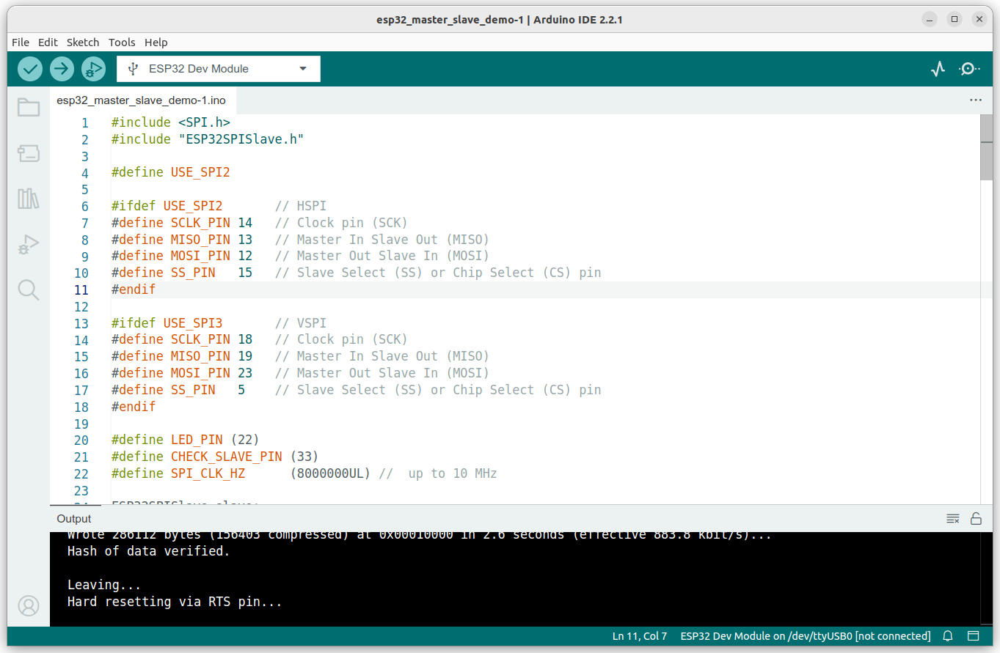
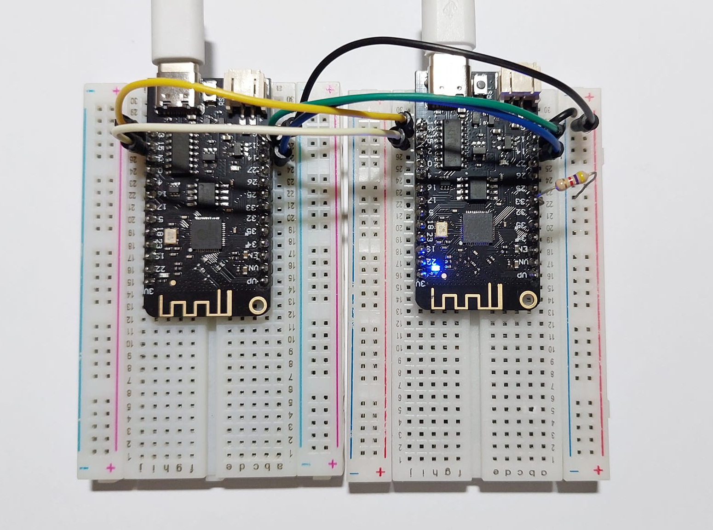
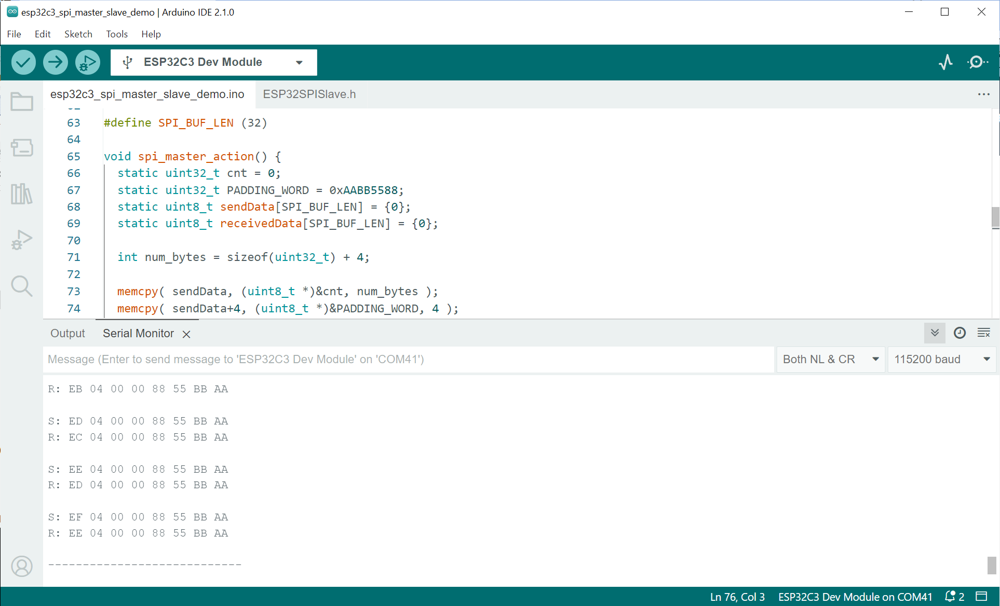
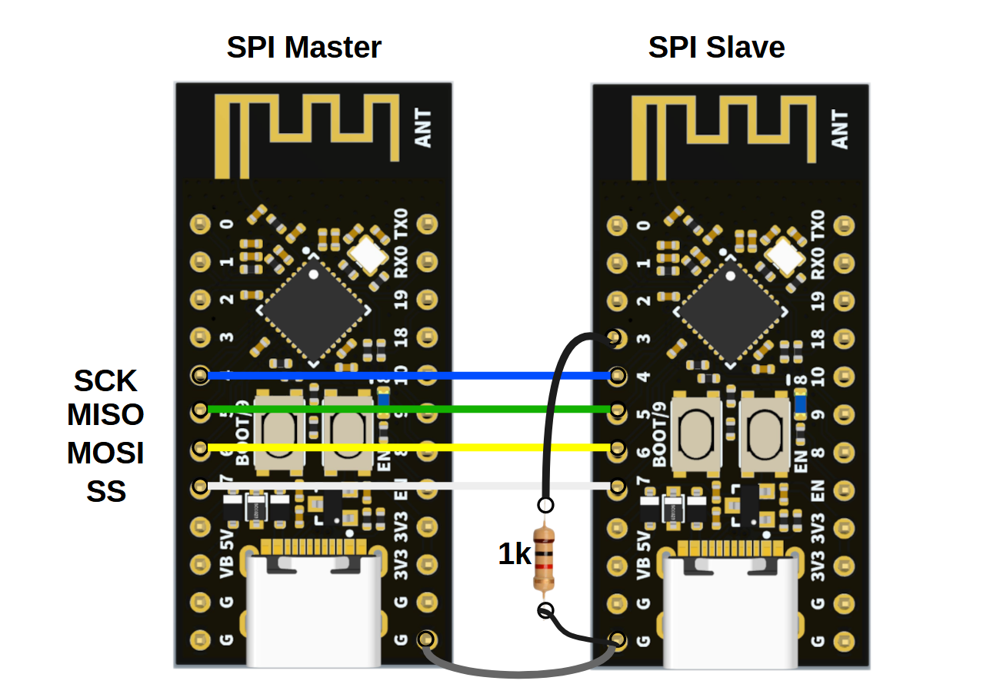
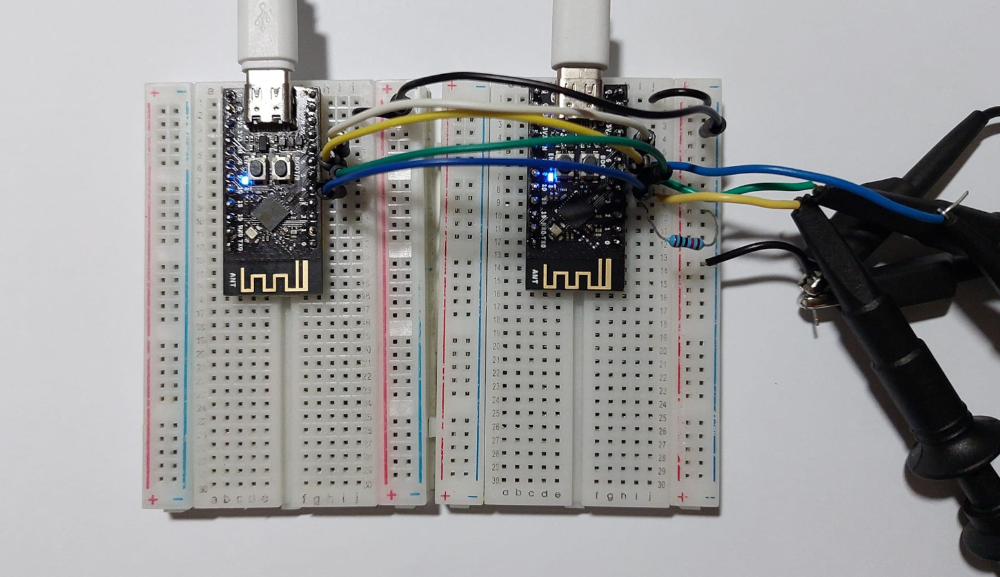
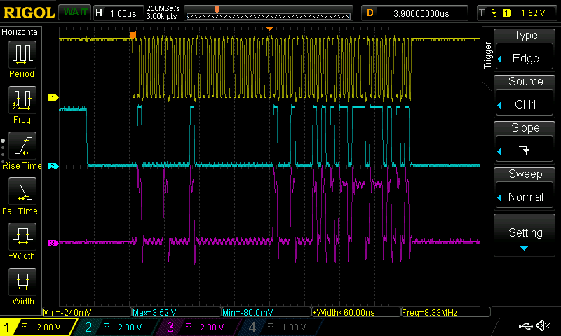
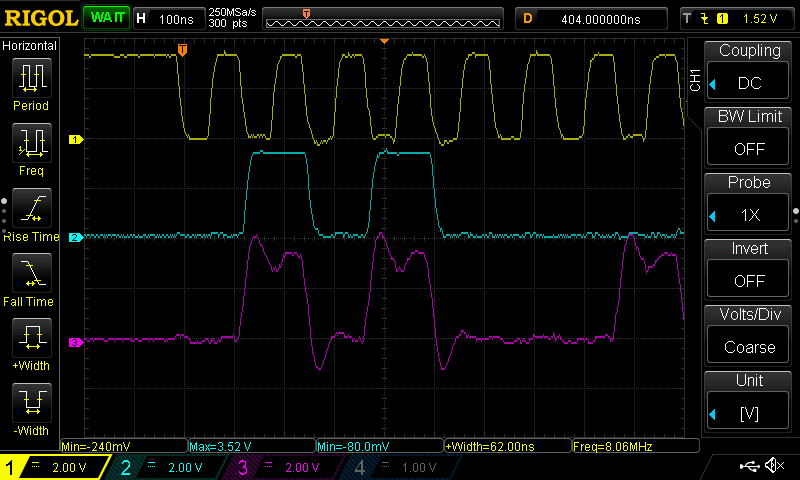
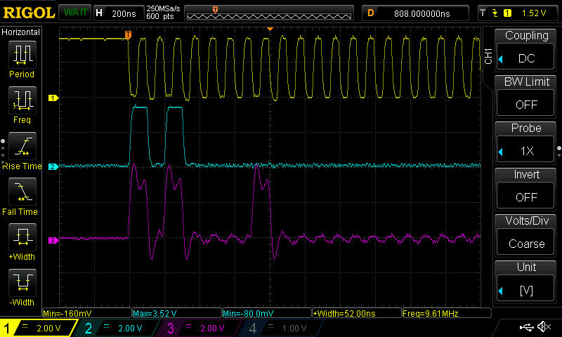

การเขียนโค้ด Arduino สำหรับ ESP32 เพื่อการใช้เชื่อมต่อด้วยบัส SPI Master-Slave#
▷ การเชื่อมต่อด้วยบัส SPI สำหรับ ESP32#
SPI (Serial Peripheral Interface) เป็นรูปแบบหนึ่งของการสื่อสารข้อมูลระหว่างอุปกรณ์แบบดิจิทัลที่พบเห็นได้บ่อย โดยทั่วไปชิปไมโครคอนโทรลเลอร์ ก็มีวงจรภายในสำหรับการเชื่อมต่อและรับส่งข้อมูลด้วยบัส SPI โดยแบ่งเป็นสองโหมดคือ SPI Master ("มาสเตอร์") และ SPI Slave ("สเลฟ")
โดยทั่วไป บัส SPI ใช้สัญญาณ 4 เส้น (ใช้งานตามรูปแบบที่เรียกว่า 4-Wire SPI) ได้แก่
- SCK (Serial Clock)
- MOSI (Master-Out, Slave-In)
- MISO (Master-In, Slave-Out)
- SS (Slave Select)
การทำงานของบัส SPI แบ่งได้เป็น 4 โหมด (SPI Modes: 0,1,2,3) จำแนกตามพารามิเตอร์สองตัวที่เรียกว่า CPOL (Clock Polarity) และ CPHA (Clock Phase) ซึ่งจะเป็นตัวกำหนดลักษณะการทำงานของบัส เช่น การเลือกที่จะส่ง-รับบิตที่ขอบขาขึ้น หรือ ขอบขาลงของสัญญาณ SCK และจะให้สัญญาณ SCK อยู่ที่ระดับลอจิก HIGH หรือ LOW เมื่อไม่อยู่ในช่วงของการส่งข้อมูลใด ๆ
การเขียนโปรแกรมด้วยคำสั่งของ Arduino Core for ESP32 สามารถทำได้ง่าย
โดยการใช้ไลบรารีที่มีชื่อว่า SPI
แต่ถ้าจะให้ทำงานในโหมด SPI Slave จะต้องใช้ไลบรารี อย่างเช่น ESP32SPISlave
SPIClass ในไฟล์ SPI.h
เป็นคลาสในภาษา C++ สำหรับการใช้งาน ESP32 SPI Master
และมีตัวอย่างของคำสั่ง (Methods) ดังนี้
SPIClass( uint8_t spi_bus )เป็น Class Constructor โดยจะต้องระบุชื่อ SPI Bus Controller ที่ต้องการใช้งาน ได้แก่HSPIและVSPIvoid begin( int8_t sck, int8_t miso, int8_t mosi, int8_t ss )เป็นการเริ่มต้นการทำงานของ SPI Master และสามารถกำหนดหมายเลขของขา GPIO Pins ที่จะเลือกใช้งานได้void setBitOrder( uint8_t bitOrder )เป็นการเลือกลำดับการส่งข้อมูลบิตออก มี 2 กรณีคือSPI_MSBFIRSTและSPI_LSBFIRSTvoid setDataMode( uint8_t dataMode )เป็นการเลือกโหมดการทำงาน มี 4 โหมด ได้แก่SPI_MODE0,SPI_MODE1,SPI_MODE2หรือSPI_MODE3void setFrequency( uint32_t freq )เป็นการตั้งค่าความถี่ของสัญญาณ SCLKvoid beginTransaction( SPISettings settings )เป็นการเริ่มต้นการรับส่งข้อมูลในรูปแบบที่เรียกว่า SPI Bus Transaction โดยมีการระบุการตั้งค่าการใช้งานด้วยSPISettingsซึ่งประกอบด้วย ความถี่ของ SCLK ลำดับการส่งข้อมูลบิต และโหมดการทำงานของ SPIvoid endTransaction( void )เป็นการจบการรับส่งข้อมูลผ่านบัส SPIvoid transferBytes( uint8_t *data, uint8_t *out, uint32_t size )ส่งและรับข้อมูลหลายไบต์ ตามจำนวนไบต์ที่กำหนด
ชิป ESP32 มีวงจร SPI Peripheral อยู่ 4 ชุด คือ
- SPI0 และ SPI1 ใช้สำหรับการเชื่อมต่อกับชิปหน่วยความจำแฟลชโดยเฉพาะ
- HSPI (SPI2)
- VSPI (SPI3)
ความถี่สูงสุดสำหรับ SCK ของ ESP32 ได้สูงสุด 80MHz ถ้าใช้ขาโดยเฉพาะผ่าน IO_MUX แต่ถ้ามีการใช้ขาผ่าน GPIO Matrix ไปยัง IO_MUX จะได้ความถี่สูงสุดไม่เกิน 40MHz
ในกรณีที่เขียนโค้ดด้วย Arduino Core for ESP32 ได้มีการกำหนดขาสำหรับ
SPI.h (VSPI) ไว้ดังนี้ (อ้างอิงจากไฟล์
pins_arduino.h
SS: GPIO-5SCK: GPIO-18MISO: GPIO-19MOSI: GPIO-23
หรือจะเปลี่ยนไปใช้ขาต่อไปนี้ HSPI ก็ได้เช่นกัน
SS: GPIO-15SCK: GPIO-14MISO: GPIO-12MOSI: GPIO-13
บทความที่เกี่ยวข้อง:
- การใช้งาน SPI และการเขียนโปรแกรม Arduino สำหรับ ESP32
- การสื่อสารด้วยบัส SPI และเขียนโปรแกรมด้วย Arduino สำหรับบอร์ด Uno / Nano
▷ ตัวอย่างการเชื่อมต่อด้วยบัส SPI สำหรับ ESP32#
ตัวอย่างโค้ด Arduino Sketch สำหรับ ESP32 เพื่อสาธิตการรับส่งข้อมูลระหว่างบอร์ด ESP32 จำนวน 2 บอร์ด โดยบอร์ดหนึ่งทำหน้าที่เป็น SPI Master และอีกบอร์ดหนึ่งทำหน้าที่เป็น SPI Slave
จำนวนข้อมูลที่จะถูกส่งออกไปโดย SPI Master ในตัวอย่างนี้ มีจำนวน 8 ไบต์
ซึ่งมี 4 ไบต์แรกได้จากค่าตัวนับซึ่งเป็นเลขจำนวนเต็มขนาด 32 บิต
และอีก 4 ไบต์จากค่าคงที่ 0xAABB5588
และในขณะที่รับข้อมูลชุดใหม่ SPI Slave จะส่งชุดไบต์ที่ได้รับครั้งก่อนกลับไปยัง SPI Master
โค้ด Arduino Sketch ใช้ร่วมกันทั้ง SPI Master และ SPI Slave แต่จะใช้วิธีอ่านค่าจากขาอินพุต GPIO-33 เพื่อดูว่า มีค่าลอจิกเป็นอย่างไร ถ้าเป็น LOW ก็ให้ทำหน้าที่เป็น SPI Slave แต่ถ้าเป็น HIGH ก็ให้ทำหน้าที่เป็น SPI Master
#include <SPI.h>
#include "ESP32SPISlave.h"
#define USE_SPI2 // Select either SPI2 or SPI3.
#ifdef USE_SPI2 // HSPI
#define SCLK_PIN 14 // Clock pin (SCK)
#define MISO_PIN 13 // Master In Slave Out (MISO)
#define MOSI_PIN 12 // Master Out Slave In (MOSI)
#define SS_PIN 15 // Slave Select (SS) or Chip Select (CS) pin
#endif
#ifdef USE_SPI3 // VSPI
#define SCLK_PIN 18 // Clock pin (SCK)
#define MISO_PIN 19 // Master In Slave Out (MISO)
#define MOSI_PIN 23 // Master Out Slave In (MOSI)
#define SS_PIN 5 // Slave Select (SS) or Chip Select (CS) pin
#endif
#define LED_PIN (22)
#define CHECK_SLAVE_PIN (33)
#define SPI_CLK_HZ (8000000UL) // up to 10 MHz for SPI Slave
// Create an object from the ESP32SPISlave class.
ESP32SPISlave slave;
boolean master_not_slave;
void setup() {
Serial.begin(115200);
pinMode(CHECK_SLAVE_PIN, INPUT_PULLUP);
pinMode(SS_PIN, INPUT_PULLUP);
pinMode(MISO_PIN, INPUT_PULLUP);
pinMode(LED_PIN, OUTPUT);
delay(100);
master_not_slave = digitalRead(CHECK_SLAVE_PIN);
Serial.println("\n\n\n");
Serial.println("ESP32 SPI Master-Slave Demo...");
if (master_not_slave) {
digitalWrite( LED_PIN, HIGH );
Serial.println("ESP32 SPI Master... ");
pinMode(SS_PIN, OUTPUT);
digitalWrite(SS_PIN, HIGH);
// Initialize SPI communication
SPI.begin(SCLK_PIN, MISO_PIN, MOSI_PIN, SS_PIN);
// Configure SPI settings
SPI.beginTransaction(SPISettings(SPI_CLK_HZ, MSBFIRST, SPI_MODE3));
}
else {
Serial.println("ESP32 SPI Slave... ");
digitalWrite( LED_PIN, LOW );
slave.setDataMode(SPI_MODE3);
slave.setQueueSize(1); // transaction queue size
//slave.begin();
slave.begin(HSPI, SCLK_PIN, MISO_PIN, MOSI_PIN, SS_PIN);
}
Serial.println("Default SPI pins:");
Serial.printf(" /SS: %d\n", SS );
Serial.printf(" SCK: %d\n", SCK );
Serial.printf(" MISO: %d\n", MISO );
Serial.printf(" MOSI: %d\n\n", MOSI );
Serial.println("User-defined SPI pins:");
Serial.printf(" /SS: %d\n", SS_PIN );
Serial.printf(" SCK: %d\n", SCLK_PIN );
Serial.printf(" MISO: %d\n", MISO_PIN );
Serial.printf(" MOSI: %d\n\n", MOSI_PIN );
if (master_not_slave) {
delay(1000);
}
}
#define SPI_BUF_LEN (32)
void spi_master_action() {
static uint32_t cnt = 0;
static uint32_t PADDING_WORD = 0xAABB5588;
static uint8_t sendData[SPI_BUF_LEN] = {0};
static uint8_t receivedData[SPI_BUF_LEN] = {0};
int num_bytes = 2*sizeof(uint32_t);
memcpy( sendData, (uint8_t *)&cnt, 4 );
memcpy( sendData+4, (uint8_t *)&PADDING_WORD, 4 );
cnt++;
// Select the slave device
digitalWrite(SS_PIN, LOW);
// Send data over SPI
SPI.transferBytes(sendData, receivedData, num_bytes);
// De-select the slave device
digitalWrite(SS_PIN, HIGH);
delay(10);
Serial.print("S: ");
for (int i=0; i < num_bytes; i++ ) {
Serial.printf( "%02X ", sendData[i] );
}
Serial.println();
Serial.print("R: ");
for (int i=0; i < num_bytes; i++ ) {
Serial.printf( "%02X ", receivedData[i] );
}
Serial.println("\n");
delay(500);
}
void spi_slave_action() {
static uint8_t sendData[SPI_BUF_LEN] = {0};
static uint8_t receivedData[SPI_BUF_LEN] = {0};
if (slave.remained() == 0) {
memcpy( sendData, receivedData, SPI_BUF_LEN );
slave.queue( receivedData, sendData, SPI_BUF_LEN );
int n = 0;
while (slave.available()) {
n = slave.size();
slave.pop(); // remove SPI slave transaction from the queue.
Serial.print("R: ");
for (int i=0; i < n; i++ ) {
Serial.printf( "%02X ", receivedData[i] );
}
Serial.println("");
}
}
}
void loop() {
if (master_not_slave) { // master
spi_master_action();
}
else { // slave
spi_slave_action();
}
}

รูป: การคอมไพล์และอัปโหลดโค้ด Arduino Sketch ด้วย Arduino IDE

รูป: การทดลองเชื่อมต่อบอร์ด ESP32 ระหว่างสองบอร์ด (โดยเลือกใช้บอร์ด WeMos Lolin32 Lite)
▷ ตัวอย่างการเชื่อมต่อด้วยบัส SPI สำหรับ ESP32C3#
ถัดไปเป็นการทดลองใช้บอร์ดไมโครคอนโทรลเลอร์ ESP32-C3 เพื่อสื่อสารข้อมูลกัน โดยใช้บัส SPI ในตัวอย่างนี้ได้เลือกใช้บอร์ด WeActStudio ESP32-C3FH4 Mini-Core Board
ชิป ESP32-C3 มีวงจร SPI Peripheral จำนวน 3 ชุด
- SPI0 และ SPI1 ใช้สำหรับการเชื่อมต่อกับหน่วยความจำแฟลชทั้งภายในและภายนอกชิป ดังนั้นจึงไม่นำไปใช้กับวงจรอื่น
- SPI2 เป็น General-purpose SPI Controller
การเลือกใช้ขา I/O ของบัส SPI2 สำหรับ ESP32C3 มีดังนี้
(เลือกใช้ตาม Arduino Core for ESP32C3:
pins_arduino.h )
และใช้เหมือนกันทั้ง SPI Master (ขา SS เป็นเอาต์พุต) และ SPI Slave (ขา SS เป็นอินพุต)
SS: GPIO-7MOSI: GPIO-6MISO: GPIO-5SCK: GPIO-4
โค้ด Arduino Sketch ใช้ร่วมกันทั้ง SPI Master และ SPI Slave แต่จะใช้วิธีอ่านค่าจากขาอินพุต GPIO-3 ของ ESP32C3 เพื่อดูว่า มีค่าลอจิกเป็นอย่างไร ถ้าเป็น LOW ก็ให้ทำหน้าที่เป็น SPI Slave แต่ถ้าเป็น HIGH ก็ให้ทำหน้าที่เป็น SPI Master
#include <SPI.h>
#include "ESP32SPISlave.h"
#define SCLK_PIN 4 // Clock pin (SCK)
#define MISO_PIN 5 // Master In Slave Out (MISO)
#define MOSI_PIN 6 // Master Out Slave In (MOSI)
#define SS_PIN 7 // Slave Select (SS) or Chip Select (CS) pin
#define LED_PIN (8) // Active-low
#define CHECK_SLAVE_PIN (3)
#define SPI_CLK_HZ (8000000UL) // up to 10 MHz
ESP32SPISlave slave;
boolean master_not_slave;
void setup() {
Serial.begin(115200);
pinMode(CHECK_SLAVE_PIN, INPUT_PULLUP);
pinMode(SS_PIN, INPUT_PULLUP);
pinMode(MISO_PIN, INPUT_PULLUP);
pinMode(LED_PIN, OUTPUT);
delay(100);
master_not_slave = digitalRead(CHECK_SLAVE_PIN);
Serial.println("\n\n\n");
Serial.println("ESP32C3 SPI Master-Slave Demo...");
digitalWrite( LED_PIN, !master_not_slave );
if (master_not_slave) {
Serial.println("ESP32C3 SPI Master... ");
pinMode(SS_PIN, OUTPUT);
digitalWrite(SS_PIN, HIGH);
// Initialize SPI communication
SPI.begin(SCLK_PIN, MISO_PIN, MOSI_PIN, SS_PIN);
// Configure SPI settings
SPI.beginTransaction(SPISettings(SPI_CLK_HZ, MSBFIRST, SPI_MODE3));
}
else {
Serial.println("ESP32C SPI Slave... ");
digitalWrite( LED_PIN, LOW );
slave.setDataMode(SPI_MODE3);
slave.setQueueSize(1); // transaction queue size
//slave.begin();
slave.begin(HSPI, SCLK_PIN, MISO_PIN, MOSI_PIN, SS_PIN);
}
Serial.println("Default SPI pins:");
Serial.printf(" /SS: %d\n", SS );
Serial.printf(" SCK: %d\n", SCK );
Serial.printf(" MISO: %d\n", MISO );
Serial.printf(" MOSI: %d\n\n", MOSI );
Serial.println("User-defined SPI pins:");
Serial.printf(" /SS: %d\n", SS_PIN );
Serial.printf(" SCK: %d\n", SCLK_PIN );
Serial.printf(" MISO: %d\n", MISO_PIN );
Serial.printf(" MOSI: %d\n\n", MOSI_PIN );
if (master_not_slave) {
delay(1000);
}
}
#define SPI_BUF_LEN (32)
void spi_master_action() {
static uint32_t cnt = 0;
static uint32_t PADDING_WORD = 0xAABB5588;
static uint8_t sendData[SPI_BUF_LEN] = {0};
static uint8_t receivedData[SPI_BUF_LEN] = {0};
int num_bytes = 2*sizeof(uint32_t);
memcpy( sendData, (uint8_t *)&cnt, 4 );
memcpy( sendData+4, (uint8_t *)&PADDING_WORD, 4 );
cnt++;
// Select the slave device
digitalWrite(SS_PIN, LOW);
// Send data over SPI
SPI.transferBytes(sendData, receivedData, num_bytes);
// De-select the slave device
digitalWrite(SS_PIN, HIGH);
delay(10);
Serial.print("S: ");
for (int i=0; i < num_bytes; i++ ) {
Serial.printf( "%02X ", sendData[i] );
}
Serial.println();
Serial.print("R: ");
for (int i=0; i < num_bytes; i++ ) {
Serial.printf( "%02X ", receivedData[i] );
}
Serial.println("\n");
if (cnt % 16 == 0) {
Serial.println("----------------------------");
delay(2000);
}
}
void spi_slave_action() {
static uint8_t sendData[SPI_BUF_LEN] = {0};
static uint8_t receivedData[SPI_BUF_LEN] = {0};
if (slave.remained() == 0) {
memcpy( sendData, receivedData, SPI_BUF_LEN );
slave.queue( receivedData, sendData, SPI_BUF_LEN );
int n = 0;
while (slave.available()) {
n = slave.size();
slave.pop(); // remove SPI slave transaction from the queue.
Serial.print("R: ");
for (int i=0; i < n; i++ ) {
Serial.printf( "%02X ", receivedData[i] );
}
Serial.println("");
Serial.flush();
yield();
}
}
}
void loop() {
if (master_not_slave) { // master
spi_master_action();
}
else { // slave
spi_slave_action();
}
}

รูป: ตัวอย่างข้อความเอาต์พุตที่ได้รับจากบอร์ด ESP32C3 ในส่วนของ Arduino Serial Monitor

รูป: การเชื่อมต่อระหว่างบอร์ด ESP32C3

รูป: การต่อวงจรทดลองบนเบรดบอร์ดและวัดสัญญาณด้วยออสซิลโลสโคป

รูป: การวัดสัญญาณ SCLK (ความถี่ประมาณ 8MHz), MISO และ MOSI และตั้งค่า Time/Div = 1us สำหรับการแสดงผล

รูป: การวัดสัญญาณของบัส SPI และตั้งค่า Time/Div = 100 ns

รูป: การวัดสัญญาณ ในกรณีที่ได้ตั้งค่าความถี่ SCLK ให้เท่ากับ 10MHz และตั้งค่า Time/Div = 200 ns สำหรับการแสดงผล
▷ กล่าวสรุป#
บทความนี้ได้นำเสนอการเชื่อมต่อบอร์ด ESP32 / ESP32C3 โดยใช้บัส SPI และสาธิตการทำงานในโหมด SPI Master และ SPI Slave เพื่อทดลองส่งและรับข้อมูลระหว่าง 2 บอร์ด พร้อมตัวอย่างการเขียนโค้ด Arduino Sketch
This work is licensed under a Creative Commons Attribution-ShareAlike 4.0 International License.
Created: 2023-09-14| Last Updated: 2023-09-15